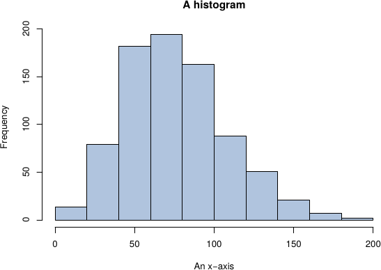

Sample Course
—
Course Material
— Figures and Embedding
Download Chapter as PDF
A chapter title
2.1 Figures
2.1.1 Graphics

Figure
2.1
A histogram originally provided in .pdf format
2.1.2 Tikz
Figure
2.2
A complete graph, drawn with tikz.
2.2 Embedding
2.2.1 Numbas
2.2.2 Vimeo
2.2.3 Youtube
![\begin{tikzpicture} [transform shape]
\foreach \number in {1,...,8}{
\mycount=\number
\advance\mycount by -1
\multiply\mycount by 45
\advance\mycount by 0
\node[draw,circle,inner sep=0.25cm] (N-\number) at (\the\mycount:5.4cm) {};
}
\foreach \number in {9,...,16}{
\mycount=\number
\advance\mycount by -1
\multiply\mycount by 45
\advance\mycount by 22.5
\node[draw,circle,inner sep=0.25cm] (N-\number) at (\the\mycount:5.4cm) {};
}
\foreach \number in {1,...,15}{
\mycount=\number
\advance\mycount by 1
\foreach \numbera in {\the\mycount,...,16}{
\path (N-\number) edge[->,bend right=3] (N-\numbera) edge[<-,bend
left=3] (N-\numbera);
}
}
\end{tikzpicture}](../../course_material/figures_and_embedding/images/img-0001.svg)